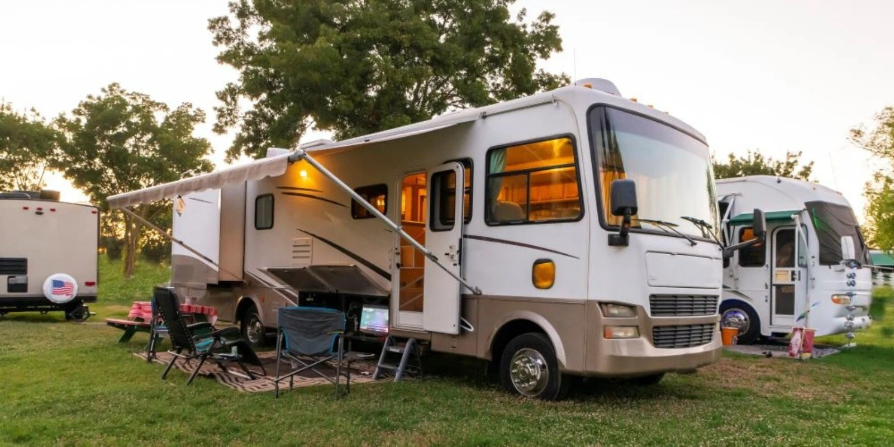

Ensure your dealership is ready to capitalize on an expected surge in RV travel demand as families seek safe, self-contained vacation options post-pandemic.
By Chet Heughan
3 min. read
If 2020 and 2021 were defined by consumers pulling back from leisure travel due to the pandemic’s social restrictions and economic uncertainty, then 2022 is looking like the year for a rebound.
That’s the message researchers and experts are getting from consumers, who are communicating across the board an increased desire to get back on the road and back to those special life experiences only travel can provide.
Outdoorsy, a community-driven marketplace for renting RVs directly from local owners, recently published a report with some key insights:
Of the travelers surveyed:
This is only a sample of the available data, but it paints a clear and consistent picture: People – entire families – are mentally and emotionally exhausted by the events of the last two years, and they feel an acute need to “get away” in 2022.
The good news is, unlike 2021, when there was hope but not certainty that COVID would recede by year’s end (which, unfortunately, did not bear out), we have a more concrete idea of what to expect in 2022. Experts are saying that 2022 will almost certainly be the year that, thanks to rising global vaccination rates and newly available antiviral treatments, COVID will shift from a pandemic to being endemic — meaning the virus’s spread and accompanying hospitalizations will be perpetually manageable, like the seasonal flu.
What this means for the RV industry is that the stars are aligning perfectly to see an explosion in demand in 2022, as the vast majority of people judge it to be safe enough to hit the road with their families.
If there is a permanent change in people’s mindsets regarding leisure travel post-pandemic, it would be an increased emphasis on factors like cleanliness, safety, and convenience — all factors that play into RV-style, self-contained travel.
In other words, as the pandemic ends and people are looking to decompress following some of the most stressful years any of us can remember, RVs are going to be exceptionally well-positioned as an alternative to crowded flights and expensive destinations.
This demand will also dovetail with the growing enthusiasm for RVs, overlanding, and road-tripping in general that we’re seeing among millennials and Gen Z, meaning 2022 could also represent a critical opportunity for retailers to make inroads with a new generation of consumers.
All of this begs the question: Is your dealership well positioned to capitalize on this increased demand? Are your sales and financing processes setting you up to minimize contracts-in-transit and eliminate time and resource waste?
When demand surges, time is of the essence. One great way dealers can capture more profit is by streamlining the credit application and document preparation processes — in other words, the process of closing deals.
That can be achieved with a solution that digitizes the financing process and establishes a web-based portal for both dealers and their lender partners to use — a solution that is free for dealers when conducting transactions with integrated lenders.
Dealers should strike while the iron’s hot, and 2022 is looking like a hot year for leisure travel demand. But remember: when you do strike, it should be from a place of strength and preparedness. Take the steps today to streamline your financing processes and position your dealership to capture as much profit as possible from every transaction.